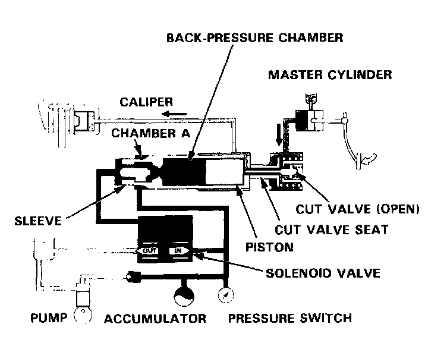
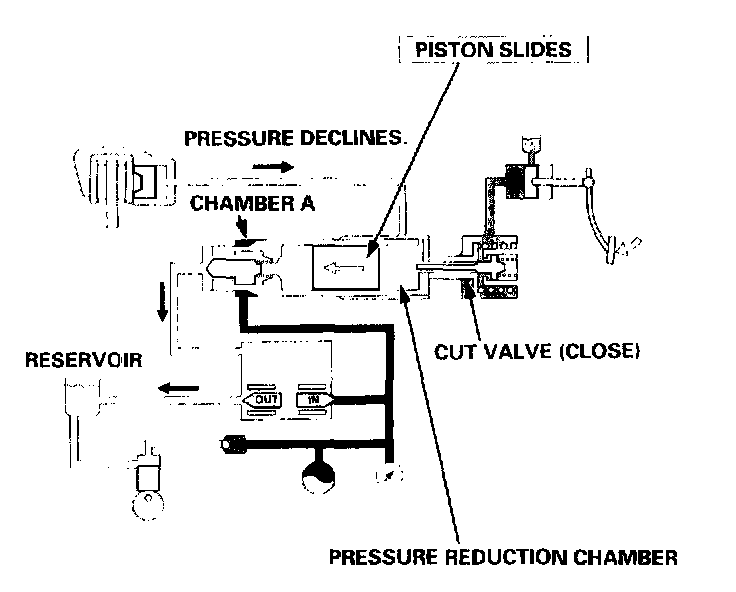
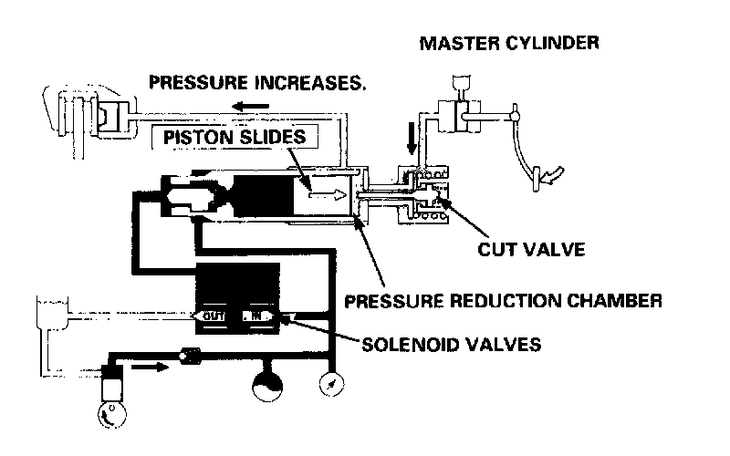
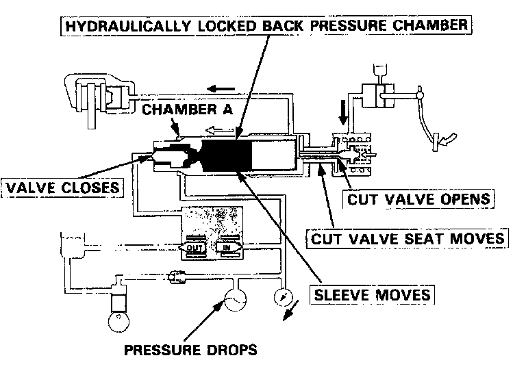

Operation

Operation
The following description of ABS operation is for one of the front wheels. The ABS operation for the remaining wheels is the same.
Ordinary braking function
In ordinary brake operations when the ABS is not functioning, the solenoid outlet valve is closed and the inlet valve is open, the brake fluid pressure is transmitted to the back-pressure chamber between the sleeve and pis ton, and the cut valve is pushed by the piston. As the high-pressure is also transmitted to chamber A between the sleeve and cylinder, the sleeve pushes the cut valve seat toward the cut valve, too.
Under there conditions, the cut valve is kept open, and the hydraulic pressure from the master cylinder is transmitted to the caliper lust like an ordinary brake system.

When ABS is functioning
- Control by reducing caliper fluid pressure:
When brake inputs (force exerted on brake pedal) are excessively large, and a possibility of wheel locking occurs, the control unit operates the solenoid valve, closing the inlet valve and opening the outlet valve. As a result, high pressure in the back-pressure chamber is released to the reservoir, and the piston is pushed by the caliper fluid pressure toward the back pressure chamber. However, the cut valve seat is kept in the pushed position because high pressure is transmitted to chamber A. As the piston moves, the cut valve moves and shuts the flow from the master cylinder to the caliper, the volume of the pressure reduction chamber connected to the caliper increases, and the fluid pressure in the caliper declines, relieving the braking force. The wheel speed is there fore restored, preventing the wheel from locking.

- Control by increasing caliper fluid pressure:
When the ABS control unit senses that the caliper fluid pressure declined, and the wheel speed is restored, it signals the solenoid inlet valve to open and the solenoid outlet valve to close~
As a result, the high-pressure brake fluid is transmitted to the back-pressure chamber, and the piston is pushed toward the pressure reduction chamber, increasing the caliper fluid pressure, and thereby the braking force again.
When the master cylinder side's fluid pressure is low, the cut valve is slightly opened as the piston moves, and the caliper fluid pressure is transmitted to the master cylinder. The kickback is felt on the brake pedal this time. When the force depressing the brake pedal is relieved while the ABS is functioning, the cut valve is opened and the pressure in the pressure reduction chamber is returned to the master cylinder side. As a result, the caliper fluid pressure is relieved.

When high-pressure declines
The ABS control unit monitors the pressure in the high- pressure passage by means of the pressure switch signals. The ABS control unit turns the ABS indicator light on, and stops the ABS when it detects an excessive drop in pressure in the high-pressure passage.
When the pressure declined due to leakage from the passage, for example, the pressure in chamber A declines, too, and the cut valve seat and sleeve return toward chamber A.
As a result, the valve at the sleeve end closes, which hydraulically locks the back-pressure chamber and blocks the piston movement. Because the cut valve opens as the cut valve seat moves, this connects the brake fluid passage between the master cylinder and caliper for ordinary brake operation.